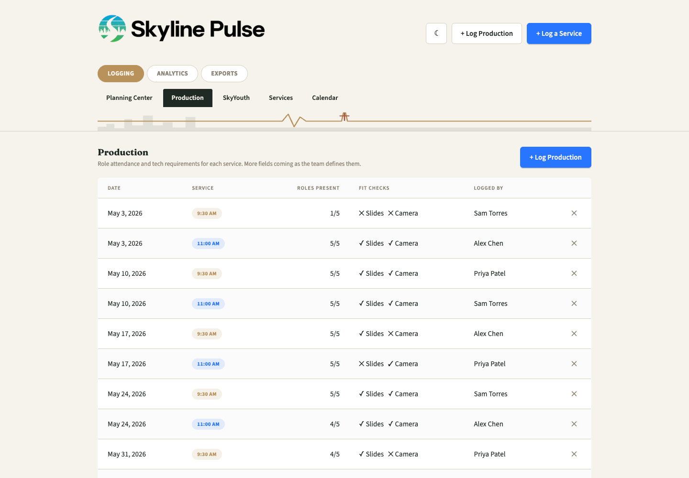
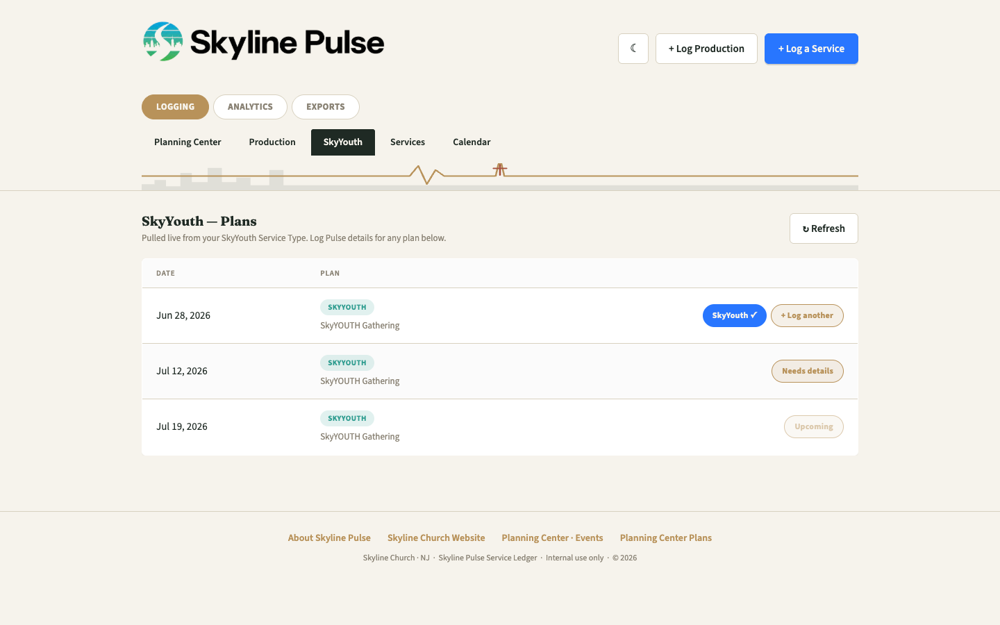
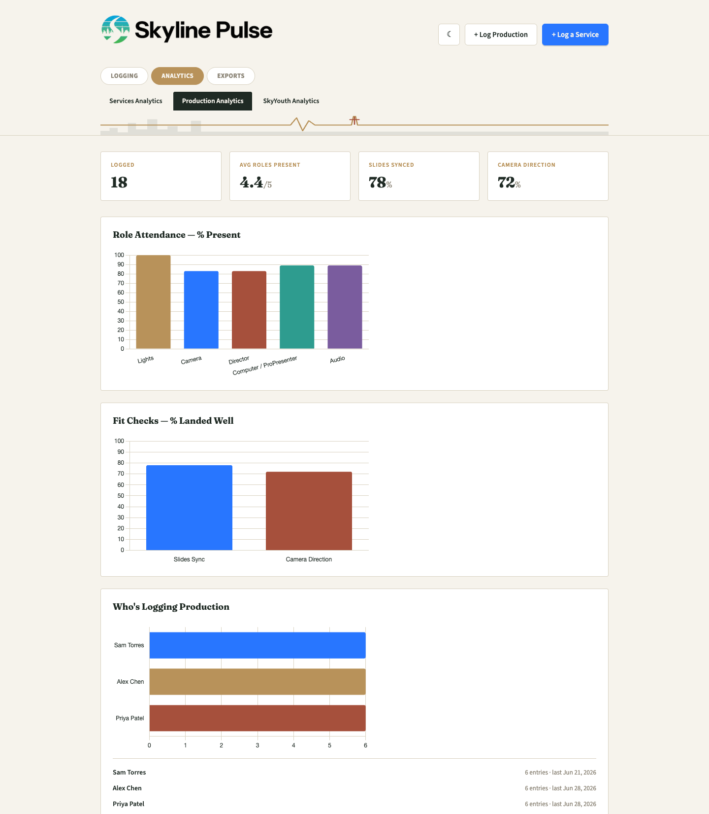
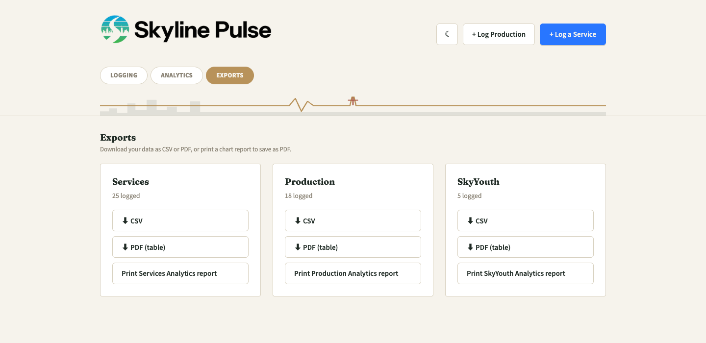

No login, no account, no training needed. This page walks through logging a Sunday service — plus Production, SkyYouth, Calendar, Analytics, and Exports — in plain steps, with pictures.
Skyline Pulse lives at one shared link — there's nothing to install and nothing to sign up for.
Ask your team lead for the link, or use skylinechurchpulse.pages.dev. Bookmark it — you'll come back every week.
Anyone with the link can view and log entries. The only thing you'll type is your name, in a "Logged by" field, so the team knows who entered a given day's numbers.
The whole app is mobile-friendly, so logging a service from your phone right after it ends works just as well as on a laptop.
This is the main thing most people will do. It takes about a minute, and Pulse already knows your services because it reads them from Planning Center.
Sunday Services tabIt's the first tab under Logging at the top, and it's what you land on when the app opens.
Every upcoming and recent Plan from Planning Center shows up automatically — with its date, sermon art, and service badge (like 9:30 AM or 11:00 AM).
Needs detailsThis button appears on the right once a service has actually happened. (Future services show a grayed-out Upcoming pill instead — nothing to log yet.) Already logged one for this Plan? The button says + Log another instead, for a second service time.

The Sunday Services tab — your Plans, pulled straight from Planning Center

The Log a Service form
If your church uses Planning Center Check-Ins, the headcount often fills in automatically with a From PCO tag. Change the number and it switches to Overridden — it's always yours to correct.
Worship unity, audience engagement, and loudness (dB) up top; sound clarity, spiritual response, and transitions under Room Experience; whether lighting, talking segments, announcements, and the sermon landed under Service Flow. Notes are optional.
Logged byRequired — it's how the team knows who entered a given Sunday's numbers. Start typing and your name will autocomplete next time.
Save EntryThat's it — the service now shows a green checkmark pill back on the Sunday Services list.
+ Log a Service button in the top-right corner of the app instead — it opens the same form without a Planning Center Plan attached, so you pick the date and service type by hand.| Field | What it means |
|---|---|
| Attendance | Total headcount for the service. Auto-fills from Check-Ins when available. |
| Worship unity | 1–5: how "one voice" the room felt during worship. |
| Audience engagement | 1–5: how engaged the room was overall. |
| Loudness (dB) | Measured or estimated sound level for the service. |
| Sound clarity | Yes/No — can you tell where the sound is coming from at the back of the room? (Yes means it blends well.) |
| Spiritual response | 0–10, judged from 2/3 of the way back in the room. |
| Transition clarity | 1–5: did transitions give clear inspiration to respond? |
| Service flow (4 fields) | Yes/No each for lighting, talking segments, announcements, and the sermon — did they land as planned? |
A separate log for the tech side of the service — who ran what, and how the visuals/camera work went.
+ Log ProductionIt's in the header next to + Log a Service, or use the same button on the Production tab.
Same service list as the main log — 9:30 AM, 11:00 AM, and so on.
Lights, camera, director, computer/ProPresenter, and audio — mark each Yes/No and type who was on it. Names autocomplete from past entries.
A "miss" is: a slide shown at the wrong time, a missed video/text cue, or a lyric slide that changed too slowly (it should advance on the second-to-last word). This feeds the Slides Leaderboard in Production Analytics.
Same Logged by requirement as the main log.

The Production tab — role attendance and fit checks at a glance
SkyYouth gets its own tab, its own Planning Center feed, and its own analytics — it's never mixed in with Sunday morning numbers.

The SkyYouth tab works exactly like Sunday Services
Click the SkyYouth tab under Logging, and follow the exact same steps as logging a Sunday service — find the plan, click Needs details, fill in the form, save. Nothing new to learn.
The Calendar tab is where you go back and check — or fix — anything already logged.

Day view — everything logged for one Sunday, at a glance

Month view — see what's covered and what's still missing
Month is best for spotting gaps at a glance; Day view is built for reviewing one Sunday's full set of logs.
Opens the same form you used to log it, pre-filled — fix a typo, correct the attendance number, anything.
A misclick isn't permanent — deleting shows an Undo option for a few seconds right after.
Click Analytics at the top of the app to switch pages. There are three tabs — Services, Production, and SkyYouth — each with its own trend charts.

Services Analytics

Production Analytics, including the Slides Leaderboard
Every chart tracks the last several services over time, and each view also shows a breakdown of who's been logging — nothing here needs setup, it's built from whatever's already logged.
Need the numbers outside the app — for a meeting, an email, or a spreadsheet? Click Exports at the top.

One card per dataset — pick a format
| Option | Best for |
|---|---|
| CSV | Opening in Excel or Google Sheets |
| PDF table | A clean printable list to hand someone |
| Print report | The live charts — opens your browser's print-to-PDF dialog |
Buttons gray themselves out automatically if there's nothing to export yet for that dataset.
Skyline Pulse pulls attendance headcounts automatically from Planning Center Check-Ins where it can. From PCO means the number shown came from that sync; if you type a different number, it switches to Overridden so it's clear a person corrected it. Either way, the number always stays fully editable.
By design — Pulse only lets you log details for services on or before today, so there's never a guessed number sitting in the ledger.
No. The app is one shared link — anyone with it can view or log entries. The "Logged by" field is just attribution, not a login.
Not necessarily. If your organization hasn't connected Planning Center Check-Ins (or the connected account doesn't have access to it), the app shows a banner explaining that on the Sunday Services tab, and you just enter the headcount by hand — everything else works the same.
Yes — the theme button (moon icon) in the top-right cycles through Light, Dark, and Ocean. Your device remembers whichever one you pick.
Open the Calendar tab, click the entry, and either edit it directly or delete it (with a few seconds to Undo).